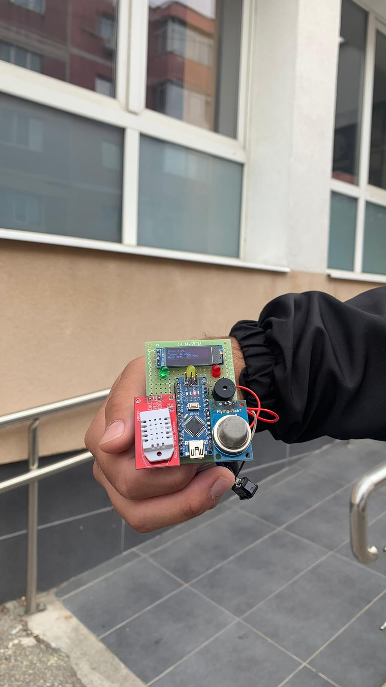
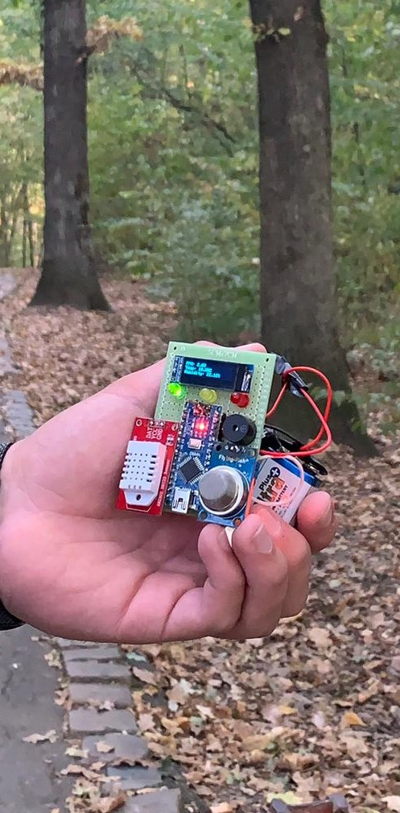

Algoritmul folosit consta in prelarea datelor din senzorul MQ-135 care detecteaza NH3,NOx,alcohol, Benzen,fum,CO2 ,etc cat si din senzorul DHT22 care preia temperatura si umiditatea aerului , combinadu-le pentru a avea un rezultat cat mai precis.
Masoara ppm-ul din aer NH3,NOx,alcohol, Benzen, fum ,CO2 ,etc.
Masoara temperatura si umiditatea aerului
Arduino Nano este o placă de microcontroler , prietenoasă cu breadboard-ul , bazată pe microcontrolerul Microchip ATmega328P (MCU)
-fire care ajuta la conectarea senzorilor
-buzzer-ul care scoate sunete in functie de nivelul ppm-ului
-ledurile care se aprind tot in functie de nivelul ppm-ului